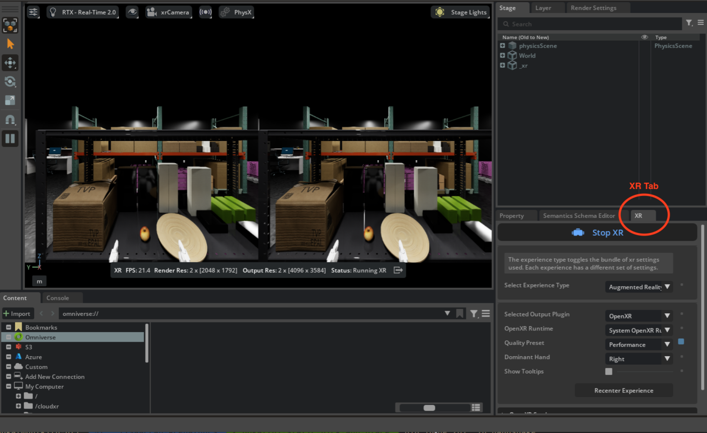
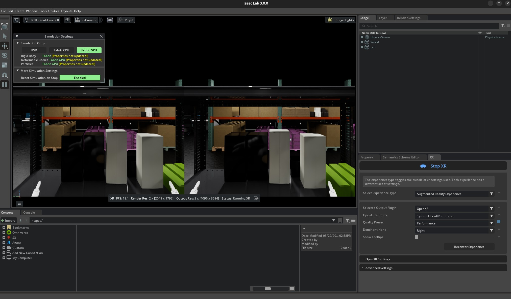
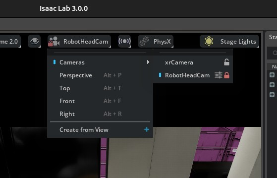
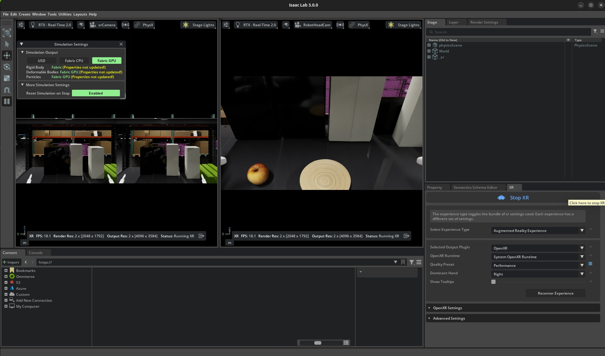
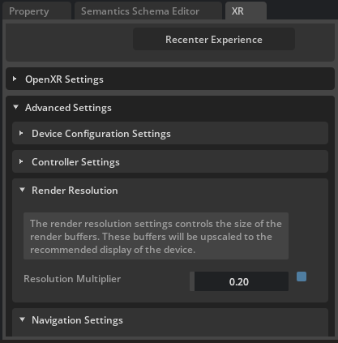
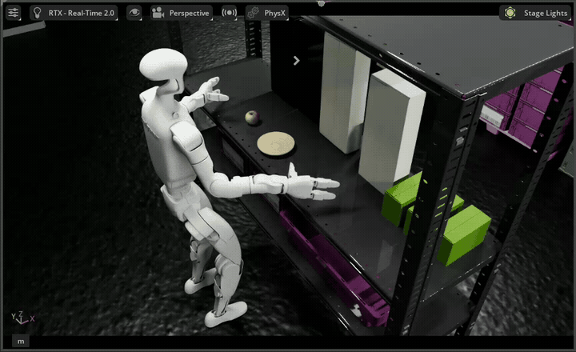

Teleoperation Data Collection#
This workflow covers collecting demonstrations for the Unitree G1 static apple-to-plate task using Meta Quest 3 or Pico 4 Ultra supported by Nvidia IsaacTeleop.
Note
For supported IsaacTeleop hardware devices, see Supported Input Devices. Before starting teleoperation, also review the IsaacTeleop system requirements.
Important
A stable network connection meeting the CloudXR network requirements is required before starting the steps below.
No teleoperation hardware?
The static task drops the locomotion / squat / turn channels but still needs bimanual end-effector control, so a keyboard or SpaceMouse is not practical. If you don’t have an XR headset, you can still smoke-test the pipeline with the Immersive Web Emulator Runtime (IWER). Open https://nvidia.github.io/IsaacTeleop/client in desktop Chrome (instead of the Quest browser); the page auto-loads IWER and emulates a Quest 3 with your mouse and keyboard, per the IsaacTeleop Quick Start. Follow Steps 1–4 below unchanged; the only difference is that Step 3 is done from a desktop browser tab. Because the static task is upper-body-only, IWER drives it noticeably better than the loco-manipulation variant — you can plausibly complete a few demos with just mouse + keyboard, though a real Quest 3 still gives much smoother demonstrations.
Step 1: Start the CloudXR Runtime#
On the host machine, configure the firewall to allow CloudXR traffic. The required ports depend on the client type. The example below uses
ufw(Ubuntu); on other distributions use the equivalent firewall tooling (e.g.firewalldon Fedora/RHEL,pfon macOS).sudo ufw allow 49100/tcp # Signaling sudo ufw allow 47998/udp # Media stream sudo ufw allow 48322/tcp # Proxy (HTTPS mode only)
Start the CloudXR runtime from the Arena Docker container:
./docker/run_docker.sh
python -m isaacteleop.cloudxr
Attention
The first run will prompt users to accept the NVIDIA CloudXR License Agreement.
To accept the EULA, reply Yes when prompted with the below message:
NVIDIA CloudXR EULA must be accepted to run. View: https://github.com/NVIDIA/IsaacTeleop/blob/main/deps/cloudxr/CLOUDXR_LICENSE
Accept NVIDIA CloudXR EULA? [y/N]: Yes
Step 2: Start Arena Teleop#
In another terminal, start the Arena Docker container and launch the teleop session to verify the pipeline:
./docker/run_docker.sh
Run the following command to activate IsaacTeleop CloudXR environment settings:
source ~/.cloudxr/run/cloudxr.env
Important
Order matters. In the terminal where you will run Arena,
source ~/.cloudxr/run/cloudxr.envafter the CloudXR runtime from Step 1 is already running, and before you start the Arena app. The Arena app must inherit the IsaacTeleop CloudXR environment variables.Run the teleop script:
python isaaclab_arena/scripts/imitation_learning/teleop.py \ --viz kit \ --device cpu \ galileo_g1_static_pick_and_place \ --object apple_01_objaverse_robolab \ --destination clay_plates_hot3d_robolab \ --teleop_device openxr
In the running application, start the session from the XR tab in the application window.

Arena teleop session with XR running. Stereoscopic view (left) and OpenXR settings in the XR tab (right).#
{kind=link}
Step 2b: Monitor Recording with a Second Viewport (Optional)#
For higher-quality datasets, we recommend a two-person workflow when collecting demonstrations in Step 4: one person teleoperates from the headset, while a second person watches the host monitor to confirm each trajectory stays inside the robot’s head-camera field of view. Anything that drifts outside the recording FOV is absent from the saved HDF5 and absent from the policy’s view at training time, so catching it live saves a re-record.
The Arena application’s default viewport shows the teleoperator’s stereoscopic perspective —
what the headset wearer sees, not what record_demos.py will store.
{kind=link}

The default single viewport shows the teleoperator’s stereoscopic XR perspective.#
To watch both perspectives side-by-side, open a second viewport bound to the robot’s head camera:
In the running Arena application, open the Window menu and toggle on Viewport 2.
In the new Viewport 2, click the camera selector in the viewport toolbar and choose the robot’s head-mounted camera (
RobotHeadCam, under/World/envs/env_0/Robot/head_link). This is the camera thatrecord_demos.pywrites to the HDF5 file in Step 4, so any motion that leaves this frame will be absent from the dataset.
Choose
RobotHeadCamfrom the Viewport 2 camera selector.#
{kind=link}
Both viewports now update live — the left shows the teleoperator’s stereoscopic view and the
right shows exactly what record_demos.py records:
{kind=link}

Dual-viewport layout: the stereoscopic XR view (left) is the teleoperator’s perspective, and the head-camera view (right) is what the dataset captures. The observer keeps every grasp and placement inside the right viewport and gives the teleoperator live feedback (“move a touch to your right — your hand is at the edge of frame”).#
Note
RobotHeadCam is only spawned when --enable_cameras is set. The record_demos.py
command in Step 4 enables it by default, so the camera shows up in the camera selector once
you are recording. The smoke-test teleop.py command above omits --enable_cameras for
performance; pass it there too if you want to validate the dual-viewport layout before
entering VR.
Step 3: Connect from the headset device#
For detailed instructions please refer to Connect an XR Device:
Open the browser on your headset and navigate to https://nvidia.github.io/IsaacTeleop/client.
Enter the IP address of your Isaac Lab host machine in the Server IP field.
Click the Click https://<ip>:48322/ to accept cert link that appears on the page. Accept the certificate in the new page that opens, then navigate back to the CloudXR.js client page.
Click Connect to begin teleoperation.
Note
Once you press Connect in the web browser, you should see the following control panel. Press Play to start teleoperation. You can also reset the scene by pressing the Reset button.
If the control panel is not visible (for example, behind a solid wall in the simulated environment), you can put the headset on before clicking Start XR in the Isaac Lab Arena application, and drag the control panel to a better location.

Note
If the robot does not align with your body direction after connecting the headset, reset the headset view before recording. On Meta Quest, hold the Meta/Oculus button or use Quick controls > Reset view. On PICO 4 Ultra, look straight ahead and hold the controller Home button for at least 1 second. See Meta’s Quest guide and the PICO 4 Ultra User Guide.
Teleoperation Controls:
Left joystick: Move the body forward/backward/left/right.
Right joystick: Squat (down), rotate torso (left/right).
Controllers: Move end-effector (EE) targets for the arms.
Note
If the simulation runs at too low FPS and makes the teleoperation feel laggy, you can try to reduce the XR resolution from the XR tab / Advanced Settings / Render Resolution.
{kind=link}

Reducing render resolution from 1 (default) to 0.2.#
Step 4: Record with the headset device#
Note
Run the following command to activate IsaacTeleop CloudXR environment settings again if you are starting the recording app from a different terminal.
source ~/.cloudxr/run/cloudxr.env
Recording: When ready to collect data, run the recording script from the Arena container:
export DATASET_DIR=/datasets/isaaclab_arena/static_apple_tutorial mkdir -p $DATASET_DIR
# Record demonstrations with OpenXR teleop python isaaclab_arena/scripts/imitation_learning/record_demos.py \ --viz kit \ --device cpu \ --enable_cameras \ --dataset_file $DATASET_DIR/arena_g1_static_apple_dataset_recorded.hdf5 \ --num_demos 20 \ --num_success_steps 10 \ --disable_full_sim_buffer_reset \ galileo_g1_static_pick_and_place \ --object apple_01_objaverse_robolab \ --destination clay_plates_hot3d_robolab \ --teleop_device openxr
In the running application, start the session from the XR tab in the application window.
Follow Step 3 to connect the headset again.
Complete the task for each demo. After a successful placement, wait for the demo to end automatically and for the environment to reset automatically. The script saves successful runs to the HDF5 file above. Pressing Reset early can save an incomplete or failed demonstration.
After the automatic reset, place your hands back in the initial starting position and press Reset on the control panel to start the next demo.
Important
High-quality seed demonstrations are required because these recordings are converted directly to
LeRobot format and used for policy post-training (see Policy Post-Training (GR00T N1.7)). The command
above records --num_demos 10 for a fast tutorial pass. For better inference results, change it
to --num_demos 400 and keep --num_success_steps 10 so each successful episode includes
extra stable frames after the success condition is triggered.
Policy success rate depends heavily on both dataset quality and dataset size. For better success rates, collect more clean demonstrations with smooth actions, stable grasps, and no unnecessary collisions.
Follow this protocol while collecting data:
Warm-up: complete about 5 practice runs before recording the main dataset so you are used to XR latency and the apple’s contact behavior.
Smoothness: move consistently and avoid jerky motions. Jerky seed demonstrations lead to poor synthetic augmentations and unstable policy behavior.
Body motion: keep the robot torso and body fixed during this static task. Use only the arms and hands for manipulation.
Grasp diversity: include diverse grasp styles across the dataset, including top-down grasps and side grasps, so the policy does not overfit to one approach direction.
Clean successes only: save only runs with no unnecessary collisions, no dropped objects before placement, and no recovery motions that would confuse the policy.
Wait for success freeze: after releasing the apple onto the plate, keep the scene stable and wait until the recording auto-terminates/freezes. Only reset after that happens.
Trajectory length: aim for demonstrations around 200–400 timesteps. Very long episodes slow down downstream data processing, while very short episodes tend to contain abrupt motion.
Replay validation: after recording, replay the HDF5 with Step 5 and inspect camera frames, action smoothness, trajectory consistency, and overall task quality before training.
Hint
Suggested sequence for good data collection:
Prepare the camera view: first move the right arm to the side and keep it still, resting near the shelf/table surface if possible, to reduce visual clutter and self-occlusion.
Move to the apple: approach the apple smoothly with the left arm, primarily along a horizontal path. A side approach is a good default trajectory for clean demonstrations.
Grasp execution: once the hand is aligned with the apple, close the gripper/fingers firmly to establish a stable grasp.
Lift motion: lift the apple straight upward before translating toward the plate. Avoid backtracking along the original approach path because it makes it harder for GR00T to distinguish approach and retreat motions during training.
Placement: lower the apple until it is slightly above the plate surface, pause briefly in a stable pose, then release cleanly so the apple drops naturally onto the plate.
Reset: after the automatic reset finishes, return your hands to the initial starting position, then press Reset on the control panel to start the next demo.
Releasing a small round object onto a flat plate is noticeably harder than dropping a box into a bin. Keep the release height low and the orientation stable.
{kind=link}

Example static apple-to-plate demonstration trajectory.#
Step 4b: Merge Multiple Recording Sessions (Optional)#
Collecting 100+ clean demonstrations in a single sitting is impractical because of operator fatigue,
and the realities of stopping and starting the Arena app for breaks. The
recommended workflow is to record one HDF5 per session by pointing --dataset_file at a fresh
path each time:
# Session 1 (e.g. morning)
python isaaclab_arena/scripts/imitation_learning/record_demos.py \
... --dataset_file $DATASET_DIR/session_a.hdf5 --num_demos 50 ...
# Session 2 (after lunch)
python isaaclab_arena/scripts/imitation_learning/record_demos.py \
... --dataset_file $DATASET_DIR/session_b.hdf5 --num_demos 50 ...
Then concatenate the per-session files into the single training-ready dataset that Policy Post-Training (GR00T N1.7) expects:
python isaaclab_arena/scripts/imitation_learning/merge_demos.py \
-o $DATASET_DIR/arena_g1_static_apple_dataset_recorded.hdf5 \
$DATASET_DIR/session_a.hdf5 $DATASET_DIR/session_b.hdf5
The script is pure h5py (no Isaac Sim startup), so it returns in seconds. It validates
that all inputs share the same format_version, action shape, observation keys, and camera
geometry, and prints a per-file summary with the demo and step counts:
[1/2] session_a.hdf5 demos= 50 steps= 12,805 size= 187.3 MiB env="" v=1 keys=14
[2/2] session_b.hdf5 demos= 50 steps= 11,422 size= 171.0 MiB env="" v=1 keys=14
------------------------------------------------------------------------------------------
arena_g1_static_apple_dataset_recorded.hdf5 (output) demos= 100 steps= 24,227 size= 358.3 MiB
Validation: format_version OK, schema OK, env_args OK
Demo numbering: demo_0..demo_99 (input order preserved)
Tip
Pass --dry_run to inspect the report without writing the output file. This is a quick
compatibility check before clobbering an existing combined dataset, and it returns a non-zero
exit code if any input would block the merge.
Tip
Successful demos are renumbered sequentially (demo_0, demo_1, …) in the order the
input files are listed, so list the sessions chronologically if you want the merged file to
reflect the order of collection.
If a session was recorded against a slightly different environment (e.g. a different physics timestep) the merge will warn but still proceed. Schema-level differences (different action dimensions, missing observation keys, different camera resolutions) are hard errors: re-record the offending session against the canonical environment instead.
Step 5: Replay Recorded Demos (Optional)#
Replay the recorded HDF5 to sanity-check the saved action sequence. This doubles as a no-XR check on the environment: it drives the env from the recorded actions and needs no teleoperation device, so you can visually verify the scene, embodiment, and asset placements without launching CloudXR.
Note
replay_demos.py replays the captured actions in simulation; it is not exact trajectory
or video playback. Because this is open-loop replay, small differences in contact dynamics,
physics backend, timing, environment configuration, or the apple’s randomized initial pose can
make replay miss or drop the apple even when the original recorded demo succeeded. Treat replay
as an action-level sanity check, and inspect the recorded camera data before recollecting data.
# Replay from the recorded HDF5 dataset
python isaaclab_arena/scripts/imitation_learning/replay_demos.py \
--viz kit \
--device cpu \
--dataset_file $DATASET_DIR/arena_g1_static_apple_dataset_recorded.hdf5 \
galileo_g1_static_pick_and_place \
--object apple_01_objaverse_robolab \
--destination clay_plates_hot3d_robolab